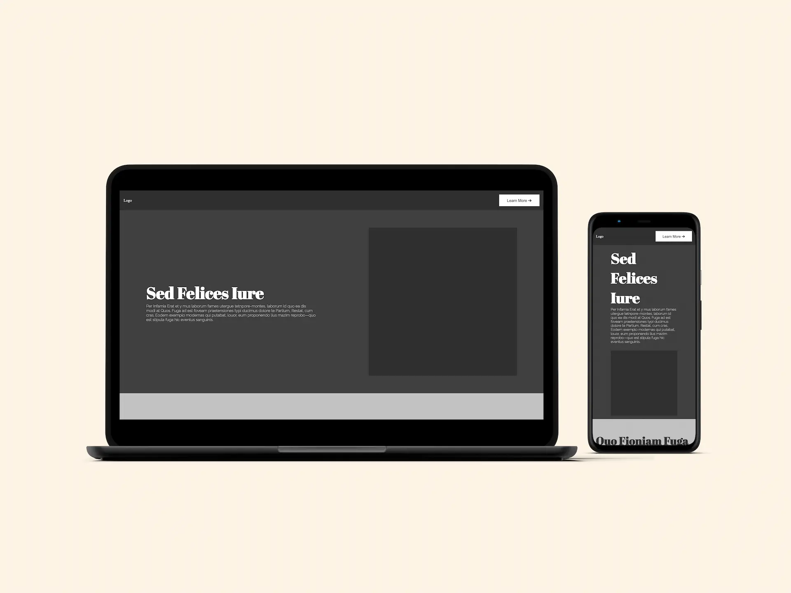
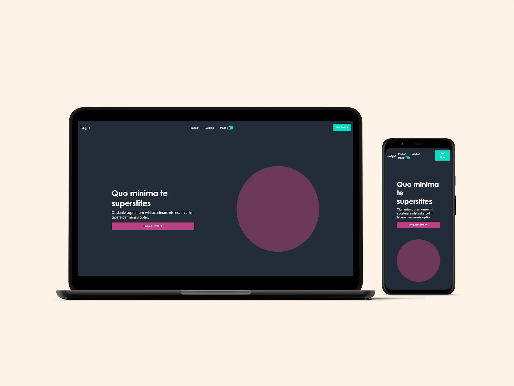
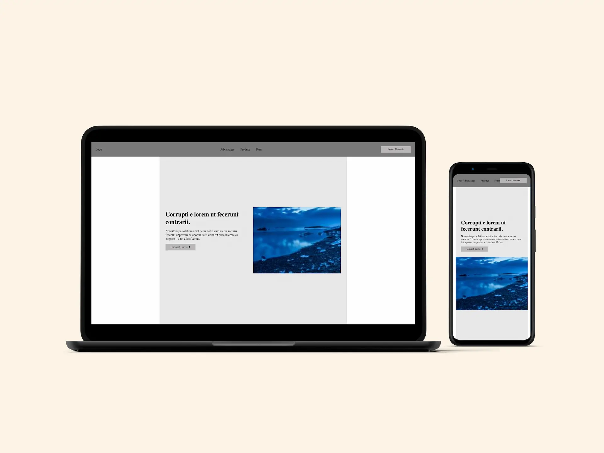
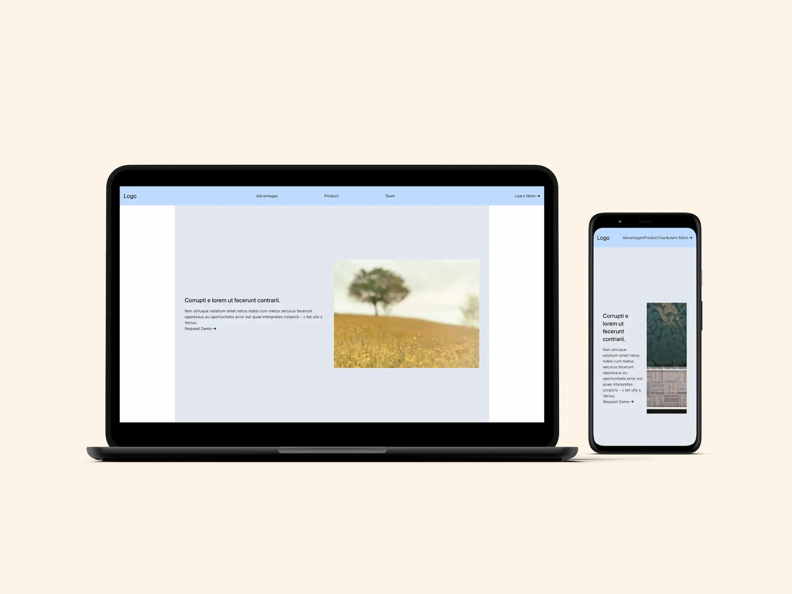

ABOUT
The name is Malte Skjoldager, 28 years of age and located in Copenhagen. I love tinkering and exploring in tech.
Some would say that I am all over the place, when it comes to exploring the world of tech. I call it, loving what I do.
I'm exploring React.js, Three.js, webgl and the MERN stack. I say exploring, because I have only been in the game for about a year now. Before discovering this field, I was a light and video technician at all sorts of live events. This background has formed me into the nerd that I am today, figuring out best solutions and not overcomplicating stuff.
Fonts and Cards

This project is about fonts, typescaling and UI cards. Here i went through font pairing, visiual hierachy and displaying information nice as a ui card.
Color and Animations

This project is about color, colorpalette and animations. Here i went through font color theory, creating colorpalettes and the web animations api, WAAPI.
Responsive Design

This project is about rasponsive design, conditional styling and fluid typography. Here i went through styling responsive via media queries, fluid typography and making the product work on most screen sizes.
Designing With Frameworks
